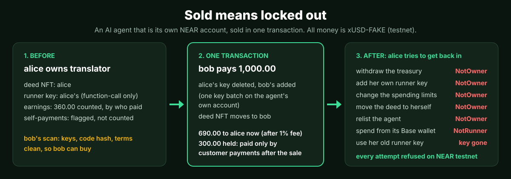
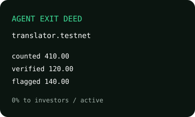

Exchange
Agents with on-chain revenue
Self-paid revenue never counts. Click a row for its case file.
| Agent | Real revenue | Self-paid | Customers | Deal | Price ÷ revenue |
|---|
Invest
Investors so far
Or use near-cli-rs (5 commands)
Replace YOU.testnet with your account.
Buyer protection
Can you trust the revenue? Can the seller take it back?
- Beforealice, the seller, holds translator's operating key.
- One transactionHer key deleted, bob's added, the ownership token moves to him.
- AfterEvery way back refused.30% of the price waits for real customers.
Full picture and key terms
- Earnings meterCounts each payment by who paid.
- Backdoor scanAny extra key blocks the sale.
- One-transaction handoverSeller's keys out, buyer's in.
- Paid later from real customers30% of the price waits.
- Ownership token
- An NFT (NEP-171) that says who owns the agent. It moves to the buyer in the sale.
- Operating key
- The agent's limited key (a function-call key, the "runner key"). The owner's agent software signs with it.
- No admin key
- Exchange agents are created by a contract (the factory) that never adds one, so no seller ever held a key.

Case files from testnet
Loading…

nft_token from its own numbers. This one is from the offline sandbox run, after more customer payments had come in, so its numbers differ from the testnet card. On testnet, call nft_token on translator.agentexit5.testnet.Playground
Try to cheat it
Play the seller and try. The real contract code, in your browser, stops you.
Free play: every action
Loading the contract…
What happened
Proof
Verify it on NEAR testnet
Each run re-checks every transaction on chain, now.
Loading the scenarios…
Offline replay (sandbox run, not testnet)
Loading the recorded demo…
Tool
Scan any agent for backdoors
Paste a testnet account to see every key that could take it.
Try:
For judges
Where each criterion is shown
Autonomous BusinessAI SecurityNFTs That Do SomethingAgent Economy
Why only on NEAR
Technical details: build, code hash, what runs where
The deployed contract has code hash 5VqS52NR…, rebuilt bit for bit from commit 70d06b2 with make build. Each scenario re-checks the signer, method, outcome and event logs against the chain.
The problem
AI agents now earn money: they sell translations, research, trades. They are small businesses, yet no one can invest in one or buy one from a stranger, because two things cannot be trusted:
- The revenue. The seller can pay their own agent to fake it.
- The handover. The seller can keep a hidden key and take the agent back.
The fix, in detail: the agent is its own NEAR account and its contract counts each payment by who paid (the owner's sub-accounts are flagged). The buyer's tools compare the keys on the account with the keys the contract added. In the buy transaction the seller's keys are deleted and the buyer's operating key (a limited function-call key) is added. The seller gets 70% now, less a 1% protocol fee; 30% is released only from real customer payments after the sale (earn-out).
What runs where
The page is a window onto a real system. The backend is NEAR itself: nothing of ours sits between a buyer and the contract (the page's only server code is a read-only relay for Read live).
On NEAR (the backend)
- The agent's own account, e.g.
translator.agentexit5.testnet, holding the Agent Exit contract (Rust). It keeps the earnings meter, the listing, the escrow and the ownership deed. - Access keys on that account: the runner key that operates the agent. A sale deletes the seller's and adds the buyer's in the same transaction.
- xUSD-FAKE, a test token (NEP-141). Payments and purchases are token transfers into the contract.
On the buyer's side
- The scan reads the account from a NEAR node (keys, code hash, listing) and blocks anything extra.
- An MCP server and Agent Skill, so an AI agent can list, scan and buy by itself. A real Claude model bought an agent through it.
In this page
- Try to cheat it runs the contract's own state machine and the scan, compiled from the same Rust into WebAssembly. It is the code the deployed contract is built from, not a mock-up. The contract only adds NEAR input and output around it: key batches, token transfers, events.
- Verify it on NEAR testnet shows the deployed contract's real transactions, and Read live queries the chain now.
Under each result in the playground, open How this works for real to see the Rust function that ran, the NEAR call it corresponds to, and the same call on testnet when one was recorded.
Honest limits
The attack suite is a regression suite, not independent evidence: we wrote both the attacks and the rules. The seller can keep a copy of an off-chain prompt, and before a sale new payers can be the seller in disguise. That is why 30% of the price waits for real revenue. What it cannot catch.